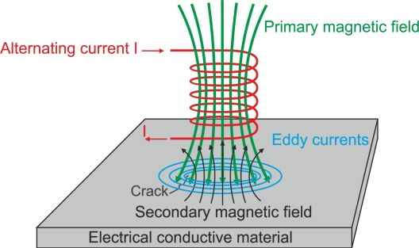

Static Electricity Safety
LCpl Clark
16 July, 2020
Things we already know
- ESD can damage equipment
- (Strong) ESD can damage people
- The job of electronics is to control electricity with conductive material, and comopnents, some of which aren't tolerant of excessive ESD
Things you may not have known
- Electricty, and charge in general, exists in a field, similar to how we feel gravity in a field, depending on our distance from the Earth
- ESD is just electrons rapidly moving toward the field they feel
- Anything inside an ESD Bag doesn't feel the changes in an ambient electric field outside the bag
How?
ESD Bags are a Faraday Cage
What?
Michael Faraday (the unit Farad was named after him, the unit of Capacitance)
People within it would never be shocked, when sparks flew around it
Explanation
As we learned from BEC, a change in electric field creates a magnetic flux, which in turn creates another electric field. This is called an "eddy current"

Explanation
As more eddy currents are created, more fields are created, and thus more eddy currents - the electric field is distributed along the surface.
When the surface is a convex shape (i.e., a bag) a conductor, the electric potential (voltage) distributed across the surface of the shape. The shape is an equipotential in the electric field.
Examples
- RF / Coax cables
- Microwave
- Cars
- Elevators
- ESD Bags
I don't care, get on with it
ESD Bags prevent electrostatic fields from forming inside the bag
- Always use an ESD bag when moving or storing components
- You can make your own bags with the heat-sealer in the Micro-Min shop, if you need to
More Precautions
At some point, a component will be removed from a bag. What else should be considered?
- The air can be electrically charged - humid or dusty air is bad (clouds and volcanos are examples)
- Your clothes get charged when you walk or contact other fabric - clothes out the dryer
- Your skin is electrically charged - your heard and muscles depend on it to function
Everything is electrically charged!
Dehumidifiers, A/C, and air filters
Reduce the chance for static buildup in the air
Being grounded
What does it mean to be grounded?
Primer on Voltage
Voltage measures the difference in charge between two points, with some distance between them.
This difference also creates a physical force between them; that's why your clothes cling when coming out of the dryer.
Similar to gravity - instead of mass, it's charge, and instead of weight, it's voltage.
Primar on Voltage
However, unlike gravity, we can often neutralize an excessive charge.
What does that mean? We make the charge of some thing the same as everything around it.
That's why it's called a ground.
Grounding yourself and your work space
- Use an ESD grounding mat on your work surface, and make sure it's connected to your ground
- Before removing or handling a circuit card, make sure you are grounded
- Place your hand on the work surface, on the grounding bar
- Stay clean
- Always wear a grounding strap connected to your ground!
Conclusion
- Always use ESD bags when storing or transporting sensitive material
- Always keep your work surface clean and dehumidified
- Always wear a grounding strap, and make sure it's connected to ground